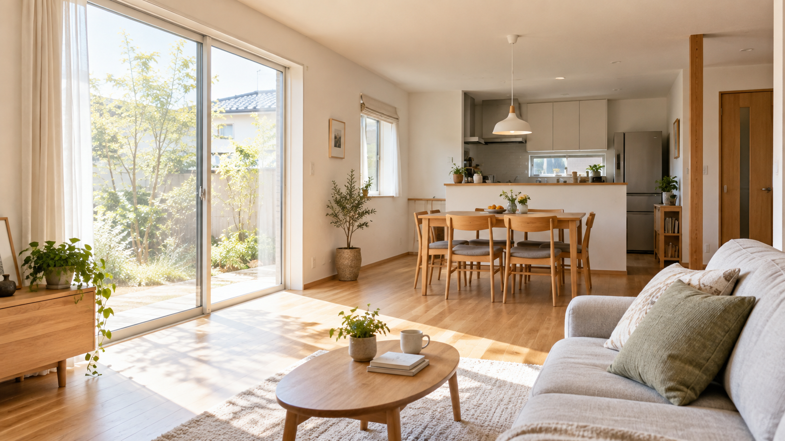
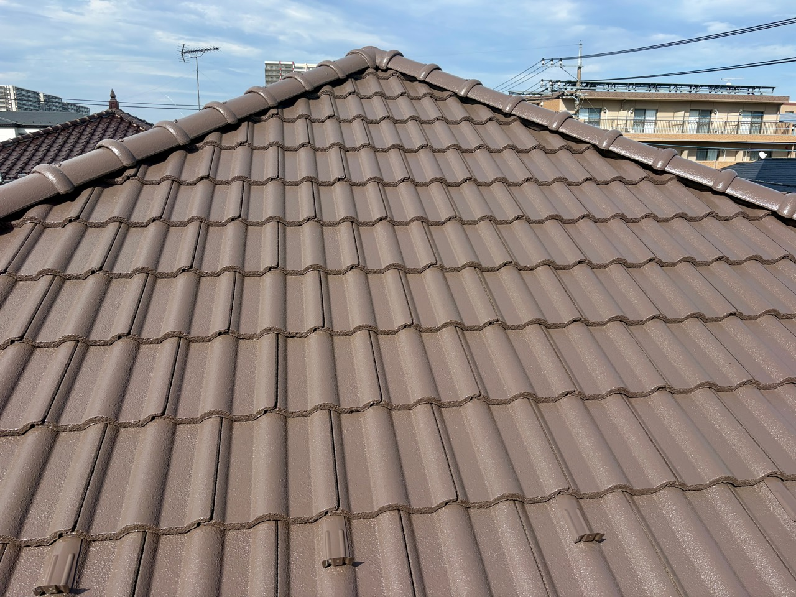
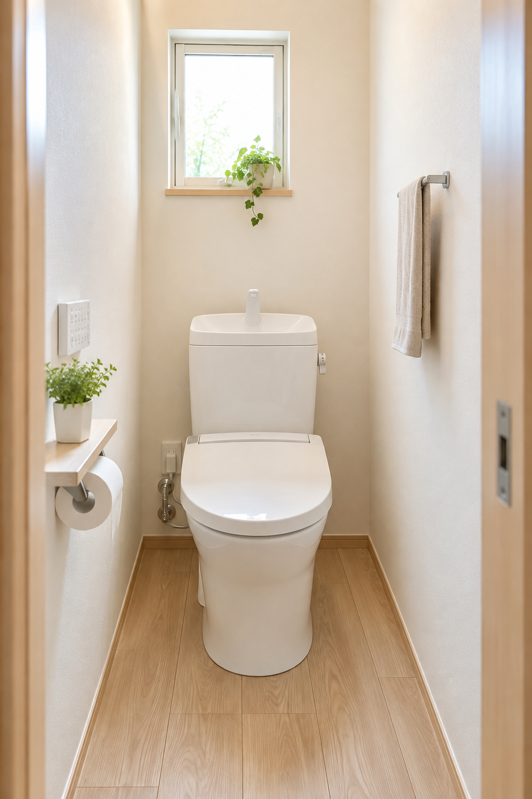
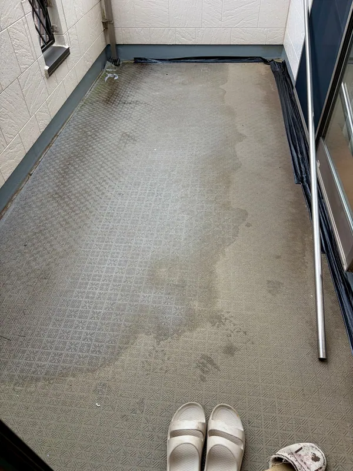

内装リフォームのイメージOKEG AWA REFORM & PAINTING
住まいのこと、
どんなことでも。
Real Makeに
ご相談ください。
外壁・屋根塗装から、内装、水まわり、小さな修繕まで。
桶川市を中心に、住まいのお困りごとに職人目線で対応します。
桶川市中心｜埼玉県内対応見積り無料｜LINE相談OK
THE FIRST PERSON TO ASK
「これ、どこに頼めばいい？」
からで大丈夫です。
外壁の傷み、雨漏り、窓まわり、水回り、暮らしの中の小さな不便まで。工事の種類が分からない段階でも、まずは状況をお聞かせください。
外壁・屋根塗装で培った現場経験を軸に、必要な工事を分かりやすくご案内し、完了まで一貫して管理します。
Real Makeの考え方を見る →WHAT WE CAN HELP WITH
住まいのこと、
まとめてご相談いただけます。
気になる場所を選んでください。内容が決まっていなくても大丈夫です。
 01
01外壁塗装
色あせ・ひび割れ・コーキングの傷み
詳しく見る →
02屋根塗装・屋根修理
屋根の傷み・雨漏り・点検のご相談
詳しく見る →内装リフォーム
クロス、壁の補修、床の張り替えなど
相談する →キッチンリフォーム
使いにくさや古くなった設備のお悩み
相談する →
05トイレリフォーム
便器交換、内装、手すりの設置など
相談する → 06
06内窓・ガラス・網戸交換
断熱、防音、防犯、破れやガタつき
施工記録を見る →
07ベランダ防水
床の浮き・ひび割れ・防水層の傷み
相談する → 08
08コーキング・小修繕
面格子、建具、細かな補修も気軽に
施工記録を見る →BEFORE YOU CONTACT US
まずはご自宅で、
費用と色を試してみませんか？
氏名や電話番号の入力なし。気になる費用の目安と、外壁の色のイメージを無料で確認できます。

 代表 大川 亮太桶川市生まれ・桶川市在住
代表 大川 亮太桶川市生まれ・桶川市在住建築業24年以上
OUR PROMISE
派手な営業より、
分かりやすい説明を。
工事を急がせるのではなく、今の状態と必要なことをお伝えし、ご納得いただいてから進めます。塗装のことも、住まいの小さな困りごとも、代表の大川がまずお話を伺います。
- 必要のない工事は勧めません
- 相談から工事後まで一貫管理
- 写真を使ったLINE相談も可能
「見積もりから金額の変更なし。色のイメージも納得いくまで打ち合わせでき、工事中もこまめに連絡をくれたので安心してお任せできました。」
HOW IT WORKS
お問い合わせから
工事完了までの流れ
- 01相談・お問い合わせ電話またはLINEで、気になることをお聞かせください。
- 02現地確認・お見積り状態と工事内容を確認し、分かりやすくご説明します。
- 03ご検討・お打ち合わせ内容にご納得いただいてから、工事の日程を決めます。
- 04工事・完了後のフォロー進行を確認しながら施工し、完了後のご相談にも対応します。
CONTACT
住まいのこと、
まずは気軽にご相談ください。
小さな修繕から外壁・屋根塗装まで。写真を送っていただければ、LINEでも状況を確認できます。